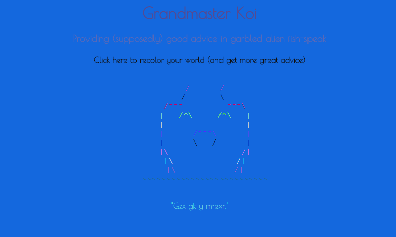

Grandmaster Koi is a randomly-colored fish that gives (supposedly) good advice in a garbled-up alien language. His colors and advice are randomly generated using Javascript. Any real words or phrases he generates are by pure chance. There is no point, and no end to the possibilities. Go crazy. *NOTE* since the colors are all random, things can sometimes be hard to see. Sorry.
A screencap of some of the Grandmaster's great advice.